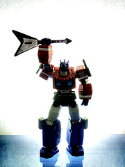

Guitar hero and music discovery

Hey all - I need some help. I'm giving a short talk this week to some
young folk (ages 15 to 20) - one point I'd like to make is how music
discovery is shifting away from traditional recommendation ('people who
like X also like Y') and toward things like guitar hero and rock band.
Since the audience is the squarely in the guitar hero demographic I
thought I could make the point quite easily by playing a few 'guitar
hero' greatest hits. In particular I'm looking for older songs by bands
that teenagers would probably never have otherwise heard if not for
guitar hero.
Even though I've played GH a bit, I'm not the right age to make the best call. So to be specific - what is the best example of guitar hero leading teens to music that they would never otherwise have listened to?
South Park devoted an entire episode to this. The song in question was Kansas - Carry on Wayward Son.
http://www.youtube.com/watch?v=FxGMLhrKrwU
Posted by Brian McFee on December 01, 2008 at 07:29 PM EST #
I don't know about others, but these are some songs that I rediscovered from Guitar Hero (all of these would predate a 20 year old):
- Crossroads (Clapton)
- Pride and Joy (SRV)
- various songs by Red Hot Chili Peppers
- ditto Guns and Roses (Welcome to the Jungle at least)
- Take me out (Franz Ferdinand)
- Crazy Train (Ozzy)
I also recommend checking out the South Park episode that featured Guitar Hero. Especially this clip:
Randy: Well you kids wanna see something really cool? Check this out.
(Randy picks up a guitar and starts playing Carry on Wayward Son)
Once, I rose above the noise and confusion
Just to get a glimpse beyond this illusion. I was soaring ever higher. But I flew too high. Though my eyes could see I-
Stan: Dad? Dad! What are you doing?!
Randy: I can actually play a lot of these songs on a real guitar. You want me to teach you boys how?
Cartman: Uhh, that's gay, Mr. Marsh.
Stan: Yeah, that's stupid, Dad.
Randy: But... But this is real.
Cartman: Real guitars are for old people
Posted by Sten Anderson on December 01, 2008 at 08:48 PM EST #
Well, you can choose from this list:
http://en.wikipedia.org/wiki/List_of_songs_in_Guitar_Hero_III#Main_setlist
(some of the bands were 'big' when your audience wasn't yet born!!!)
A good choice (for me, as I was ~15 at that time) would be 'Even flow' (Pearl jam) http://www.youtube.com/watch?v=6zHSUDrLDBQ
BTW, an interesting Sunday's lunch topic to discuss with teenager relatives is about the songs in GH III, and which ones they like the most.
(...they even like Poison, as I did back then http://www.youtube.com/watch?v=3_SS9m7exLg )
Posted by oscar on December 01, 2008 at 10:35 PM EST #
I went the opposite way.
I never saw the value in the song "Maps" by Yeah Yeah Yeahs until I played it on Guitar Hero. Listening intently to the song while "playing" it, I was able to pull out some intricate stuff that I had never heard previously.
Note: I am an old fogey who thinks that today's music is a lot of hooey.
http://www.allmusic.com/cg/amg.dll?p=amg&sql=33:azfuxn9jldde
Posted by Zac on December 02, 2008 at 08:28 AM EST #
A few songs that my sons know primarily from GH:
War Pigs - Black Sabbath
Black Magic Woman - Carlos Santana
Jordan - Buckethead
Posted by Mike on December 02, 2008 at 11:05 AM EST #
I purchased rock band almost a year ago. my girlfriends 13 year old has since purchased a number of classic rock songs including "Dont Fear the Reaper" by BOC, "Bang A Gong" by T-rex, and a bunch of Ramones. now I'm sure she would have come across many of these songs at some point as they are not what i would consider to be "dusty grooves" and are no strangers to commercial radio and movie soundtracks. What did strike me was that hearing them in the context of a game environment (and the subsequent interaction) is what provided the impetus to make a sale - i don see her have the same reaction when she hears something she likes on the radio or even TV. perhaps it is because the brain in in a more active mode in a game environment than when watching tv or listening to the radio that makes her brain more open to discover.
Posted by Rocketsurgeon on December 02, 2008 at 11:47 AM EST #
<i>one point I'd like to make is how music discovery is shifting away from traditional recommendation ('people who like X also like Y') and toward things like guitar hero and rock band.</i>
Paul, is this an example of what we've talked about in the past, the "just show me something good" style of recommendation? I.e., is Guitar Hero, by amassing these "best of" songs for a new generation, essentially acting as a "show me something good" recommender? Is that what you're basically saying, here?
Posted by jeremy on December 08, 2008 at 05:43 PM EST #
@Jeremy = Good point, I hadn't thought about it that way .. .but yes you are right ... guitar hero is giving non-personalized recommendations of good music. It is that 'show me something good' recommender.
Posted by Paul Lamere on December 09, 2008 at 04:30 PM EST #